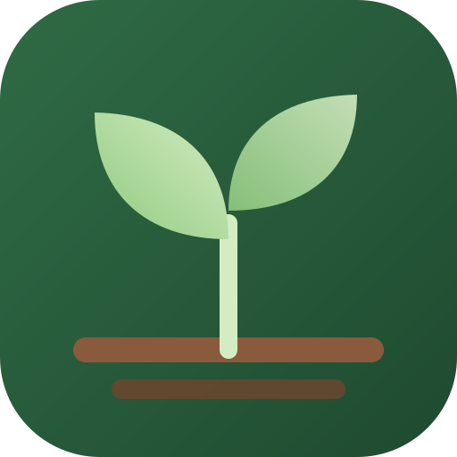

Your soil, your season, your dollars. Backyard growing, measured.
Real lab or kit numbers replace the estimates everywhere. Leave blank what you don't have.
From the last three years of local weather: crop water use (evapotranspiration) minus the rain your soil holds onto.
Picks whole bags to minimise what you spend at the store, while meeting this plan's nitrogen, phosphorus and potassium needs.